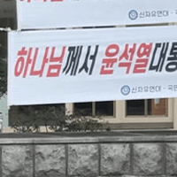

중국은 딱 수출하기 좋은 나라지 경제적으로 엮여서 좋을 게 없음
뭐 기술이전이라든가, 공장 세운다든가 등
ㅇㅇ · 11.05 03:17:52
군벌출신인게 문제지 급식이 문제겠냐ㅋㅋㅋㅋ제발 대가리 좀ㅋㅋㅋ
ㅇㅇ · 11.05 03:18:46
베트남 인도네시아 이런 일부 동남아 국가들과 국민들은 진짜로 지들이 금방 한국처럼 될 거라고 믿고 있었더라 우리도 우리나라를 선진국으로 잘 안보는데 (물론 해외에서 볼 때는 객관적 통계 수치도 그렇고 선진국으로 봄) 저 병신들은 근자감이 미친듯이 뿜뿜하다가 요새 현타 제대로 맞는 중
펜도르 · 11.05 04:22:47
저기 대통령 정책 보니까 그냥 혼자 중세시대 사는 급이던데 어쩌다가 저런 새끼가 뽑혔냐? 르네상스 시절에도 안하던 쇄국정책이랑 외국자본 쳐내기를 21세기에 함
ㅇㅇ · 11.05 04:42:26
ㄹㅇ
둘리 · 11.05 05:10:59
팩트는 쟤들 우리나라 증시와 비슷하게 올라가고 비슷하게 떨어짐. 게다가 우리는 아지가 MSCI 선진국 지수 들어가지도 못했음. 한국이 인도네시아 비웃는게 웃긴거임.
@ㅁㄴ새ㅜㅑㄴ(122.38) 이거 보면 한국과 인도네시아중 어떤 나라가 건강한 지수를 가지고 있는지 알수 있어. 한국꺼는 네이버에서 알아서 봐봐. 한국만한 병신 도박 지수가 따로 없음 이러니 인도네시아도 들어가는 MSCI 지수도 편입 실패하지.
↳ 답글 · ㅁㄴ새ㅜㅑㄴ · 11.05 05:30:55
@둘리(125.139) 그 사이트는 나도 매일 들어가고 인도네시아도 이머징이고 우리나라도 이머징인데 인도네시아가 독립으로 이번에 강등되는 이슈야
↳ 답글 · 둘리 · 11.05 05:30:38
@ㅁㄴ새ㅜㅑㄴ(122.38) 누가보면 우리나라가 매년 인도네시아처럼 40%씩 상승하는 나란줄 알겠다. 10년을 계속 2000선에서 놀다가 갑자기 이번년에 올라서 지금 40% 오른걸 유지하는 나라 VS 매년 40%씩은 성장하는 나라. 어느 나라가 병신임?
↳ 답글 · ㅁㄴ새ㅜㅑㄴ · 11.05 05:32:42
@둘리(125.139) 그 사이트는 나도 매일 들어가고 인도네시아도 MSCI 이머징이고 우리나라도 이머징인데 인도네시아가 독립으로 이번에 강등되는 이슈야
우리나라는 MSCI 선진국 지수 편입관련해서 계속 트라이하고 있는거고
↳ 답글 · ㅇㅇ · 11.05 08:25:38
뭔 한국이 인도네시아를 비웃는 게 웃겨 병신아 ㅋㅋㅋㅋㅋㅋㅋㅋㅋㅋㅋㅋㅋㅋㅋㅋㅋㅋㅋㅋㅋㅋㅋㅋㅋㅋㅋㅋㅋㅋㅋㅋㅋㅋㅋㅋㅋㅋㅋㅋㅋㅋㅋㅋㅋㅋㅋㅋㅋㅋㅋㅋㅋㅋㅋㅋㅋㅋㅋㅋㅋㅋㅋㅋㅋㅋㅋㅋㅋㅋㅋㅋㅋㅋㅋㅋㅋㅋㅋㅋㅋㅋㅋㅋㅋㅋㅋㅋㅋㅋㅋㅋㅋㅋㅋㅋㅋㅋㅋㅋㅋㅋㅋㅋㅋㅋㅋㅋㅋㅋㅋㅋㅋㅋㅋㅋㅋㅋㅋㅋㅋㅋㅋㅋㅋㅋㅋㅋㅋㅋㅋㅋㅋㅋㅋㅋㅋㅋㅋㅋㅋㅋㅋㅋㅋㅋㅋㅋㅋㅋㅋㅋㅋㅋㅋㅋㅋㅋㅋㅋㅋㅋㅋㅋㅋㅋㅋㅋㅋㅋㅋㅋㅋㅋㅋㅋㅋㅋㅋㅋㅋㅋㅋㅋㅋㅋㅋ
닉값하네 븅신새끼 ㅋㅋㅋㅋㅋㅋㅋㅋㅋㅋㅋㅋㅋㅋㅋㅋㅋㅋㅋㅋㅋㅋㅋㅋㅋㅋㅋㅋㅋㅋㅋㅋㅋㅋㅋㅋㅋㅋㅋㅋㅋㅋㅋㅋㅋㅋㅋㅋㅋㅋㅋㅋ
↳ 답글 · ㅇㅇ · 11.05 12:06:24
우선 한국이 MSCI 에서 신흥국으로 분류되는 이유는 시장 접근성 부문 때문임
나머지 경제, 시장규모는 이미 선진국 기준 초과달성인 상태고, 다른 기관들에서도 한국은 당연히 선진국으로 분류됨
인니따위랑 비교하는게 말이나 되나...
개넨 지금 독립시장으로 두 단계 강등 위기에다가
그냥 시발 어느 기관, 어떤 지표를 가져와도 인니는 한국에 못 비비는데 병신아
↳ 답글 · 둘리 · 11.05 13:56:38
@ㅇㅇ(121.175) 인도네시아 땅 크기가 한국 19배이고 인도네시아는 계속 성장중이다가 이번년에 처음 꺾인거고 한국은 계속 빌빌 기다가 작년에 반도체 팔아서 반짝한건데 이 두개를 비교하는 놈들이 있구나.
애초에 자원 빼고는 별 산업도 없는
바나나 공화국이다
단지 인구가 3억명이라서 인구빨에 따른 총 GDP만 높아 보이는 것뿐
기술력도 없고 내실은 전형적인 똥남아
ㅁㄴ새ㅜㅑㄴ · 11.05 05:24:33
항상 나라가 개판이구나 생각하면서도 나라가 굴러가는게 얼마나 힘든일인지 요즘들어 더 자주 느낀다.
↳ 답글 · ㅇㅇ · 11.05 06:35:50
이재명 대통령님 덕에 대한민국이 숨을 쉰다
ㅇㅇ · 11.05 05:49:13
똥튀기 단교 언제하냐
ㅁㅁ11 · 11.05 06:17:39
저병신나라 존나 기괴한게 똥남아+개슬람임ㅋㅋㅋ - dc App
↳ 답글 · ㅇㅇ · 11.05 08:25:05
최악끼리 합쳐놓음, 똥남아 + 개슬람
Di냐어어 · 11.05 07:11:38
감동실화
ㅇㅇ · 11.05 07:29:25
떨어졌으면 주워라 원투데이하냐
ㅇㅇ · 11.05 07:51:50
산유국 지위도 잃어버린지 오래됐고 원유 수입국이면서 그렇다고 이슬람에서 가장 중요하게 여기는 순수 혈통을 한자리 차지 하는 것도 아니며 얘네가 요르단 왕처럼 예언자 무함마드의 직계자손도 아니고 뭐 내세울게 있어야지 지리적 위치라도 좋으면 몰라 땅은 매년 해수면 상승에 의해서 가라앉지 국민들 인간성을 또 이슬람 극단주의자마냥 해줘 아몰랑 해줘 이러고 있지 뭐있는데 애초에 자카르타가면 물갈이가 심각한게 다 이유가 있는거여 꼴에 이슬람 순니파인데 마왈리들뿐이라 ㅈ도 힘도 없어요 이슬람이 이게 문제인게 혈통을 존나게 따져요
ㅇㅇ · 11.05 08:05:51
인도네시아가 10년 안에 선진국에 진입 할 거라고 누가 예상했음? 진짜 태어나서 처음 듣는 소리인데 무슨 일이든 일어 날 수 있는 100년을 이야기 했다면 모를까 10년? 말이 되는 소리야?
↳ 답글 · ㅇㅇ · 11.05 08:24:48
지들끼리 그리 생각했나 BOJI
ㅇㅇ · 11.05 08:24:24
한국도 다 겪었던거다.
놀랍지만 25년 전에 있었던 일인데 학교 행정실 직원이 사립학교 이사장이 (딸린 학교가 25년 전에 무려 5~7개는 됐음)
학생들 급식비 매 끼 마다 100원씩 꼬불쳐서 횡령한 거를 찌른 사건이고,
그 학교 이사장이 행정실 직원을 무려 청부살인.....으로 죽였거든?
무죄 - 무기징역 - 무죄
로 계속 판결도 바뀐 역대급 사건있음
그러니 급식 생기고 급식비 지원하지? 그거 꽁쳐 먹는 새끼가 무조건 나오고 그걸 관리할 줄 알아야 함
나는 솔직히 인도네시아가 아직도 국가를 유지하고 있는거 자체가 신기함. 돌아가는거 보면 이미 예전에 망해서 없어지는게 맞는거 같은데
ㅇㅇ · 11.05 09:07:38
전투기값이나 내놔 시발련들아
ㅇㅇ · 11.05 09:10:01
팜유싸개 좆도네시아 새끼들 처녀막 검사나 해라 ㅋㅋ
ㅇㅇ · 11.05 09:14:35
한 나라의 대통령 증시와 경제랑 기싸움 하네
인구 대국이라 잠재력은 있지만 인구'만' 대국인데 선진국 바라는건 노양심 애미리스 아님?
ㅇㅇ · 11.05 09:15:20
인간 사회는 실패함
ㅇㅇ · 11.05 09:21:47
시민의식 ㅄ임 >> 이상한걸 뽑음 >> 나라 좆망. 처음보는 것도 아니잖아
↳ 답글 · 무한탐구 · 11.05 10:07:56
젤렌스키 ?
↳ 답글 · 무한탐구 · 11.05 10:08:01
아찢
ㅇㅇ · 11.05 09:24:19
저 새끼들은 진짜 뭘 믿고 지금의 한국과 비교하는거냐? 필리핀, 태국, 베트남, 인도네시아 진짜 이새끼들은 원숭이새끼들이 자아만 존나 비대하네
↳ 답글 · ㅇㅇ · 11.05 12:11:27
사실 1인당gdp라는 명확한 수치만 비교해도 자국의 현실을 자각할수 있는데
원래 못사는 나라일수록 그걸 곧이곧대로 받아들이기 힘들어함
ㅇㅇ · 11.05 09:41:55
딱 찢재명이랑 똑같노 ㅋㅋㅋ
주갤럼 · 11.05 09:58:08
우리는 찢 보유국인데 그나마 기업들이 탄탄해서 버티는거고 동남아 부터해서 중진국 함정에 빠진 나라듯 도미노 처럼 좃되는거 보게 될 것
↳ 답글 · ㅇㅇ · 11.05 11:00:26
반도체 2사 빼고는 모조리 씹창났는데요
ㅇㅇ · 11.05 10:01:16
대체 누가 인도네시아가 선진국 될거라고 예측을 함? 끽해야 동유럽 몇국가나 예측했지 10년전에도 중국때문에 중진국의 함정 절대 못뚫을거다라고 봤는데 진짜 똥남아 새끼들 자아비대 하나는 어마무시하구나 ㅋㅋ
ㅇㅇ · 11.05 10:05:18
개슬람 나라 답노
xom · 11.05 10:08:30
알라한테기도해 병신들아 ㅋㅋㅋ
ㅇㅇ · 11.05 10:13:51
그래도 짱깨새끼들보다 낫네... 짱깨새끼들은 핑핑이 무서워 덜덜덜
ㅇㅇ · 11.05 10:26:47
열대지방 = 지능낮음 = 선진국 불가능
ㅇㅇ · 11.05 10:34:00
좌파가 득세하면 저래댐
ㅇㅇ · 11.05 10:39:31
이미 막차 끝나서 후진국들은 선진국 절대 못옴
ㅇㅇ · 11.05 10:50:12
땅은 땅대로 나름 넓고 사람도 많은데, 저게 섬도 많고 평야도 아니고 산지가 바글바글하고 그래서 지방 우덜 민주주의나 부패가 심해서 전국적으로 그거 척결하지 못하는 이상 불가능 하다고 봄, 한국은 일제시대 들어서면서 거기 동네 유지 구시대 양반들 다 쫓아내고 + 태평양 전쟁으로 일본인 다 쫓아냄 + 6.25전쟁으로 리셋 + 이 과정에서 돈 좀 있는 놈들은 돈 들고 일본이든 미국이든 튀어서 거지들만 나라에 남은 상황에서 새마을 운동으로 지방이나 시골 이상한 문화를 어느정도 나라 중앙에 맞출려고 했던게 유효했던듯
ㅇㅇ · 11.05 10:56:40
인도네시아에 약점은 화산, 지진, 태풍 자연재해가 많고 가장 큰 약점은 국토가 합쳐진 게 아니라 전라도 처럼 수많은 섬들로 이루어져 있고 그 섬마다 전라도 개새끼들 처럼 카르텔이랑 부패가 존나 심함 그래서 본토와 다르게 도로며 통신 인프라도 제대로 깔기 힘들고 그래서 같은 섬나라라도 하나로 잘 뭉치고 규율 잘지키는 일본 처럼 발전을 못하고 아직도 수도 시설 없어서 물 길러다가 씻고 빨래하는 곳들 존나 많음 인도네시아는 잠재력은 있으나 워낙 부패가 심하고 하나로 뭉치기 어려운 나라라 선진국 되긴 어려움
ㅇㅇ · 11.05 10:59:45
무상급식에 자금횡령 식중독 포퓰리즘?? 이거 좆센이랑 똑같자너? ㅋㅋㅋㅋㅋㅋ
ㅇㅇ · 11.05 11:03:33
1998년에 폭동 일으켜서 화교들 남자는 참수해서 머리 굴러다니게하고 여자는 강X하던 쓰레기들이 아무도 처벌 안받았던 ㅈ같은 나라가 인도네시아임 내가 봤을때는 정치가문들이 유도했거나 방조했다고 생각되는데 그런 놈들이랑 같이 사업하려하는게 얼마나 어리석은 일인지알겠냐? 짐승들과는 대화를 하려하지마라
ㅇㅇ · 11.05 11:13:13
인도네시아 숏 쳐서 존나 달달하게 먹기
ㅇㅇ · 11.05 11:38:03
이래도 인도 안무너지는거보면 그냥 얘낸 천성이 노예 유전자가 각인되어있음 ㅋㅋㅋ
ㅇㅇ · 11.05 11:40:27
돈이나 내놔 정글토인새끼들아 ㅋㅋㅋㅋ
ㅇㅇ · 11.05 11:44:56
어...? 왜 머리가...
ㅂㅂ · 11.05 11:52:52
선진국으로 누가 예측을 해 ㅄ 말도 안되는 소리하고 있네 국민소득 수준을 봐라 선진국이 가능한가 유일하게 인구빨로 새끼를 존나 까니까 중국식으로 경제 커질 거라는 예측 있었는데 똥남아는 죽어도 절대 안 된다
ㅂㅂ · 11.05 11:54:13
거기다 인도네시아는 내전이 일상인 곳이고 국토도 작은 섬으로 쪼개져 있어서 인프라도 개판인데 선진국 되면 차라리 똥트남이 더 먼저 되겠지 개뿔 암것도 없는 정글 아시안인데 애 존나 낳는 거 하나로 선진국 될 거면 인도는 진즉에 선진국이지
ㅇㅇ · 11.05 12:13:27
1인당gdp 2026년 기준
한국 43000달러
인도네시아 5100달러
10년내로 선진국ㅋㅋㅋㅋ
ㅇㅇ · 11.05 13:10:33
선진국 ㅋㅋㅋㅋㅋㅋ 제대로 알아보지도 않고 맘대로 지껄이고 있네 ㅋ 인당gdp 5천 밖에 안되는 동남아 후진국이 인구수 덩치빨로 경제규모 커질거라는 예측이 있었던거지 선진국이 무슨 뜻인지 모르냐 ㅋㅋㅋ
ㅇㅇ · 11.05 13:45:47
뭔 선진국같은 소리하고 있네 장난하냐?
더이상의 선진국은 조만간 나오기 어렵다는게 정설이고
그나마 가능성 있는게 폴란드 정도인데
인도네시아가 10년내 선진국은 무슨 말도 안되는 소리야
저런 무능+부패정권은 국민들이 탄핵을 한 번 해봐야 선진국으로 성장 할 수 있음
저거 탄핵 못하면 영원한 후진국임
ㅇㅇ · 11.04 22:19:56
곧 선진국 되는 나라 딱 알려준다. 말레이시아, 카자흐스탄, 폴란드 외워라
↳ 답글 · fancyha0102 · 11.04 23:35:08
ㅇㅋ
ㅇㅇ · 11.04 22:20:10
10년 선진국 진입 예측 <<== 여기서부터 스크롤 쭉 내림. 읽을 가치가 없음. 인도네시아는 세계 4위라는 인구 규모 때문에 총gdp라는 경제규모에서 세계 10위 안에 들어갈 것이라는 예측이 있었던건데 뭔 선진국 진입 예측이 있었다는거야? 인도네시아 1인당gdp가 얼만데 시발 10년 내 선진국 진입을 한다는거야? 인도네시아가 어디 뭐 1년에 경제성장을 20%씩 하나? 하여튼 정보통신기술이 발전해서 안좋은 것 중에 하나가 이렇게 수준 낮은 글들이 너무 많이 돌아다닌다는거임.
↳ 답글 · ㅇㅇ · 11.05 02:05:36
하다못해 국가총생산이 세계10위에 들었어도 강대국 타이틀도 못 얻었을텐데 선진국은 무슨ㅋㅋㅋㅋ
윗댓 말대로 강대국 선진국 구분 못하는건 둘째치고 그것도 틀렸잖아
ㅇㅇ · 11.04 22:20:17
인구수 많다는 얘기만 들어봄 발전가능한 미래산업은 뭐가 있음?
ㅇㅇ · 11.04 22:20:26
똥남아는 깝치지마
ㅇㅇ · 11.04 22:20:55
거의 대부분의 동남아랑 일부 중동은 지구 멸망까지 절대 선진국 반열 못 올라올듯 지들이 자초함
인도네시아도 터키도 둘다 한국의 강력한 미래 라이벌이었는데 둘다 셀프운지중... 한국으로썬 다행이지 ㅋ
ㅇㅇ · 11.04 22:31:32
선진국이라는게 돈만 번다고 되는게 아니라 국민수준도 받쳐줘야 되는데 뭘 모르나보네
ㅎㅎ · 11.04 22:31:36
전 세계 좌빨 독재자들은 하나같이 포퓰리즘으로 나라 망쳐놓네 ㅡㅡ
ㅇㅇ · 11.04 22:32:14
너네 100년내 자바에서 방빼야해
ㅇㅇ · 11.04 22:34:07
무상급식 주가조작 우덜식비리 상시계엄환율 이거 완전 민주조선 아니냐 엌ㅋㅋㅋㅋ
ㅇㅇ · 11.04 22:34:13
KF-21 산다면서 못사겠노
ㅇㅇ · 11.04 22:35:42
디시 글 긁어갔나
트위터 글이 왜저래
ㅇㅇ · 11.04 22:38:26
똥남아 튀기들도 주식시장이 있어? 신기하네
ㅇㅇ · 11.04 22:39:25
대체 지금의 조선과 뭐가 다르단 건지
↳ 답글 · ㅇㅇ · 11.04 23:24:00
똥남아인이라 모르는거임?
↳ 답글 · ㅇㅇ · 11.05 02:35:40
화쪽짱조 벌레새끼 니 벌레눈깔에 카악퉤-
도깨비빤스 · 11.04 22:40:02
코로나 끝날 때쯤 인도네시아 이민 가려고 존나 진지하게 찾아보다 예전 자카르타 대규모 시위 이후 상황 찾아 보고 접었는데 ㅈ될뻔했다 - dc App
ㅇㅇ · 11.04 22:41:09
무상급식?
ㅇㅇ · 11.04 22:41:18
뭔 인니가 10년 내 선진국 진입? 생전 처음 듣는 이야기네. 100년이 지나도 힘들 껄.
↳ 답글 · ㅇㅇ · 11.04 22:48:40
선진국이 아니라 인구빨로 중국 인도 부라질 같은 경제대국 된다고 했었음 옛날에ㅋ 글쓴애가 무쉭해서 경제대국을 선진국으로 착각한거ㅋ - dc App
↳ 답글 · ㅇㅇ · 11.05 06:32:14
그래도 인구가 많아서 한때 주목받았던 시기가 있었음
그 결과는 보이는 것처럼..ㅋㅋ
ㅇㅇ · 11.04 22:43:02
인도네시아가 선진국 진입할뻔했도르라고?
ㅇㅇ · 11.04 22:43:18
인도네시아를 한국이 무시할 수준인가.. 미국 없으면 오리지날한국의 모습은 북한이다 ㅋㅋㅋㅋㅋㅋㅋㅋㅋ
↳ 답글 · ㅇㅇ · 11.04 23:23:46
미국을 왜 없애노
YasminWijnaldum · 11.04 22:44:45
한국이 선진국이 된건 사실 기적임. 서양은 그냥 사회 지도층은 세습으로 귀족 나라였던 반면 한국은 예로 부터 지도층이 되려면 사법고시급 시험을 패스해야하는 존나 심한 학구열로 존나 똑똑한 국민 + 그 똑똑한 머리로 기술 배워올 수 있었던 당시 기술 선진국 세계 경제 2위 대국의 일본 + 그 배워온 기술로 물건을 만들어서 팔 시장인 또 다른 옆나라 중국... 이 엑조디아를 모두 모았다고??
뭔 씨발 개좆도 아무것도 없고 수도가 가라앉는 새끼들이 선진국이 어떻게 되노 미친새끼들이노
ㅇㅇ · 11.04 23:08:08
저기 무상급식 나라살림에 비해 존나 빨리 하고 중간에 부패세력 끼면서 휘청거린다고 들었음. 대충 정부지출의 6%에 교육예산의 30% 정도 차지하고 있고 그 소식 들은 외국계 투자자본은 포퓰리즘 시작하는 거 감지하고 한꺼번에 빠져나가서 엎친 데 덮친 격이라고 들었음
ㅇㅇ · 11.04 23:08:48
많이 뒤져야 봐줄만 하지 저런거 징징임
ㅇㅇ · 11.04 23:12:27
인도가 4시면 인도가 아니게 되냐
ㅇㅇ · 11.04 23:15:51
중국도 선진국으로 안치는데 인도네시아따위가 어떻게 10년안에 선진국이됨?
ㅇㅇ · 11.04 23:17:23
인터넷 여포할시간에 나라나 살리지 그랬누 ㅋㅋㅋㅋ
ㅇㅇ · 11.04 23:22:50
중진국이 중진국했노
ㅇㅇ · 11.04 23:26:50
10년 안에 선진국 된다고 믿었단다 ㅋㅋ 대체 현실감각이 얼마나 없는거냐 ㅋㅋ
ㅇㅇ · 11.04 23:27:08
한국에 구걸하지나 마라 지금도 계속 구걸하더만
ㅇㅇ · 11.04 23:28:32
여경 채용할때 처녀막 검사하던 나라가 선진국? ㅋㅋ
ㅇㅇ · 11.04 23:30:16
씹도네시아 1인당 GDP 가 5000 달러인데 뭔 선진국 타령이노 ㅋㅋㅋ 1년에 600 만원 버는 선진국도 있나
ㅇㅇ · 11.04 23:34:02
인도네시아가 선진국? 혹시 경제규모 10위권을 잘못말한거 아니냐? 인도네시아는 선진국이란 말이랑 십만년 떨어진 나라다. 말하자면 인도 중국이 선진국이 아닌 이유랑 같음
ㅇㅇ · 11.04 23:40:41
ㅇㅇ · 11.04 23:42:30
동남아는 부패가 너무 심해
ㅇㅇ · 11.04 23:56:28
인도네시아의 찢재명이네ㅋㅋㅋㅋㅋㅋㅋㅋㅋㅋㅋㅋㅋㅋkf21의 복수다ㅋㅋㅋㅋㅋㅋㅋㅋㅋㅋㅋㅋㅋㅋㅋㅋㅋㅋㅋㅋㅋㅋㅋㅋㅋㅋㅋㅋㅋㅋ
ㅇㅇ · 11.05 00:01:59
코스피보다 낫네 시발 ㅋㅋㅋㅋㅋㅋㅋㅋㅋㅋㅋㅋㅋㅋㅋㅋㅋ 곧 3천따리 간다
ㅇㅇ · 11.05 00:04:13
선거에 3번이나 패하고 대통령이 됐다는 건, 어느 정도 돈과 지지 세력이 있다는 것임. 대통령이 되었으니깐 후원자하고 돈줄에서 보답은 해줘야 겠고, 한자리씩 자리에 앉힐려다 보니 나라 경제가 거덜한 거임.
환란 전 교회 휴거 · 11.05 00:06:13
모든 인간은 죄 본성에 대한 심판으로 지옥에 갈 수 밖에 없지만 선을 추구하는 "양심"이 있는 자, 그 인류 죗값을 위해 주 예수 그리스도께서 보혈을 흘리시고 부활하신 사실을 "믿는"다면 구원받게 된다 더 나아가 현재 휴거 임박 시점에 선을 추구하는 "양심"이 있는 자, 이 복음을 "믿는"다면 곧 닥칠 7년 환란과 죽음을 면하고 살아서 천국에 직행하게 된다
야곱의사다리 · 11.05 00:11:35
아니 애초에 저새끼들은 뭐 공학 의학 특출난 분야가 있긴함? 자원이나 팔아먹던새끼들인데 인도처럼 천재들이 많은것도 아니고
↳ 답글 · 채피 · 11.05 00:15:25
자원하고 인구빨
ㅇㅇ · 11.05 00:37:12
동남아가 선진국되기 힘들고 이슬람이 선진국 되기 힘든데 동남아에 이슬람이면 그냥 평생 후진국 하자 ㅇㅇ;;;
↳ 답글 · ㅇㅇ · 11.05 11:46:43
인사이트 쩌네
↳ 답글 · ㅇㅇ · 11.05 20:28:24
말레이시아는 그래도 중진국 정도는 찍지 않았음? 인도네시아랑 확실히 수준이 다르던데
ㅇㅇ · 11.05 00:42:10
새끼들 지들이 세계 4위 경제대국이라면서 국뽕 오지게 빨던데
ㅇㅇ · 11.05 00:44:47
전세계 시민이여 봉기하라 일어나 다 때려부셔라
한국과 경제력 격차가 더 벌어지도록 계속 파괴하라
↳ 답글 · ㅇㅇ · 11.04 21:51:27
@ㅇㅇ 일본은 그때가 최고 전성기였는데 극단적인 예시로 물타고있네 ㅋㅋㅋㅋ 일본이랑 비빌정도면 전두환이 잘한거 팩트
@ㅇㅇ 광주가 왜 광역시중에 가장 낙후됐을까? 똑같은 상황이어도 지도자의 역량이 중요함 전두환이 평이 갈려도 한국을 발전시킨 인물임은 명확함
ㅇㅇ · 11.04 21:17:44
인구 많은 후진국은 선진국 진입하려면 빨라도 50년임. 전국민 교육해서 의식 개혁하고 기존 세대 뒤질때까지 걸리는시간.
ㅇㅇ · 11.04 21:19:02
인도네시아 문재앙 당했누
↳ 답글 · ㅇㅇ · 11.04 21:23:32
ㅇㅇ · 11.04 21:19:12
정글아시안+개슬람 답이 나오겠냐? 인구가 아무리 많아 봐야 쓸모있는 인재가 없는데 되겠냐고
ㅇㅇ · 11.04 21:19:20
ㅇㅇ · 11.04 21:19:24
질문) 팜유는 어디에 씀? 그리고 인도네시아가 팜유 가격을 조절할 만큼 생산량이 많음?
↳ 답글 · ㅇㅇ · 11.04 21:19:55
식당 기름 대부분 팜유임
↳ 답글 · ㅇㅇ · 11.04 21:52:11
가공 초콜렛도 있고 제과 제빵 마가린 비누 등등.. 기름이 필요한데 싸게 하는거면 거의 팜유라고 보면된다.. 예전에 라면 우지파동있었을때도 어디는 공업용 소기름 쓰는 쓰레기 라면이고, 우리는 몸에 좋은 식물성 팜유 쓴다고 헛소리 한적도 있긴한데 ㅋㅋㅋ 가장 저급한 식물성 기름.
↳ 답글 · ㅇㅇ · 11.04 21:53:06
인도네시아 갈때 비행기 위에서 보면 야자수같은게 온산에 줄맞춰서 덮고 있는데 그게 다 팜유
↳ 답글 · ㅇㅇ · 11.04 22:16:07
인도네시아는 팜유 최대 생산국이다
↳ 답글 · ㅇㅇ · 11.05 01:48:05
한국에서 판매 되는 초콜릿 절대 다수가 다 팜유로 만든다
ㅇㅇ · 11.04 21:19:27
ㅇㅇ · 11.04 21:19:54
인도네시아 = 그냥 바다에 가라앉는게 맞음
ㅇㅇ · 11.04 21:19:54
무슬림은 안돼 ㅋㅋㅋ
ㅇㅇ · 11.04 21:20:05
팩트체크)
중권시장
미국 일본 영국 캐나다 - 선진국지수
중국 한국 인도네이시아 대만 - 신흥국지수
↳ 답글 · ㅇㅇ · 11.04 21:26:03
인도네시아는 지금 심각한 상황 투자한 나라들이 돈을 째기 시작하면 그때부터 금융위기
아직 일본은 돈은 안뺀 상황이라 괜찮지만.. 2달후 개선안되면 신흥국지수에서 탈락하기 때문에
그때부터 돈이 빠지기 시작할거다
제일 큰 손은 일본. 미국국채 프랑스국채등등 국채 자체를 많이 가지고 있어서 던지기 시작하면 금융위기옴
ㅇㅇ · 11.04 21:20:17
전투기대금안갚을려고튄새기들이 뭔선진국이여
ㅇㅇ · 11.04 21:20:25
정일이형이 알려줬지? 아래 개돼지들은 좆같이해도 군부하고 중간 간부 애들 잘 챙기면 철밥통인거?
ㅇㅇ · 11.04 21:20:26
아이큐 80조금 넘을텐데 무슨선진국?
↳ 답글 · ㅇㅇ · 11.04 22:02:19
10년내 선진국 예상되는 국가래 ㅋㅋㅋ
ㄹㅇ얼탱이가 없음 ㅋㅋㅋㅋ
ㅇㅇ · 11.04 21:20:28
또 조센징까지 연쇄 imf 오냐..
ㅇㅇ · 11.04 21:20:34
지금 정부가 부패하고 해쳐먹는걸로 따지면 우리나라도 남일이 아님
지돈마냥 국민연금 쓰다 멸망 , 반도체 역대 세계 최고 대호황에
오히려 국가채무는 역대 최고 속도로 올라 고작 1년만에 나라 빚 300조가 늘었고
지금도 실시간으로 늘고있는데 간첩새끼들 해쳐먹는거 계속 가만놔두면 나라망하고 잃어버린 N년 시작임
지금도 짱깨 간첩 매국노 범죄자 카르텔인 국회새끼들이 나라 모든곳을 실시간으로 다 박살내면서 해쳐먹고 있으니
↳ 답글 · ㅇㅇ · 11.04 21:21:07
지금 나라 꼬라지보면 우리가 죽임당하기전에 먼저 네팔해서 짱깨 간첩 매국노 범죄자 카르텔인 국회새끼들 싹다 없애야함
짱깨 간첩 매국노 범죄자 카르텔인 국회새끼들 지들 뒤질걱정 없으니
눈치안보고 마음껏 나라팔아먹고 온갖 개지랄 다하고있는데
계속 외면하고 모르쇠하면 솥안의 개구리 마냥 한국도 얼마못가 독재 공산화 될 뿐임
그때가서 눈물흘려봐야 늦음 이건 이미 생존의 문제임
우리가 죽기전에 먼저 네팔해서 짱깨 간첩 매국노 범죄자 카르텔인 국회새끼들 싹다 없애야함 없애지않으면
죽는건 우리임
↳ 답글 · ㅇㅇ · 11.04 21:23:52
또또 되도 않는 개소리로 선동 하고 있다 ㅋㅋㅋ
↳ 답글 · ㅇㅇ · 11.04 21:34:05
@ㅇㅇ(121.185) 뭐가 개소리임? 지돈마냥 국민연금 쓰다가 멸망했고
반도체 역대 세계 최고 대호황에 오히려 국가채무는 고작 1년만에 300조 늘었는데?
찢죄명은 부동산 규제때려놓고 정작 지는 바로 근저당 해서
지들은 애초부터 법 자체를 지킬생각 없이 국민들 노예 만들려고 온갖 악법 규제 증세 때린다는걸 보여줬는데?
헛소리로 무지성 선동하고 우기기 , 인신공격 해대는건 짱깨 댓글부대 전문아님?
기본소득을 바라거나 복지재정을 유지,확장하는 걸 원한다면 외노자들을 들여와야 함
Ai로봇이 대체하면 된다고 하는데 노조들의 강력 반대,러다이트 운동이 예상되기 때문에 당장은 어려움 근데 외노자에 대해선 대기업 노조들은 반대할 명분이 약해짐
기본소득이나 복지재정의 재원의 일부를 외노자들이 버는 돈에 대해 보다 많이 높은 세금으로 충당하고
↳ 답글 · ㅇㅇ · 11.04 21:41:05
대신 해당 외국인들에겐 일정 기간 이상 세금을 내면 영주권이나 시민권을 부여해 기본소득이나 복지혜택을 받을 수 있게끔 하는 거임 그렇게 하여 노조나 노동 기득권층이 기본소득으로 살아가게 되면 ai로봇 체제로 전환하는 거지
외노자들의 본국 송금을 제한하는 목적으로 현금 대신 지역화폐로 급여를 지급하는 방법이 있음
↳ 답글 · ㅇㅇ · 11.04 21:41:28
@ㅇㅇ(211.234) 외노자의 급여를 지역화폐로 전환하여 송금 제한,높은 세금으로 재원 충당-ai로봇 시대로 전환 테크로 가야 함
물론 강력한 치안과 세금 추징이 가능한 집행 능력이 필요할 거임
쉬었음이나(예정자 포함)사회적 약자라면 외노자에 대해 이와 같이 긍정적인
이용가치가 있으니 생각을 바꿔보는 게 좋을거임
ㅇㅇ · 11.04 21:40:54
ㅇㅇ · 11.04 21:41:05
저 븅신나라는 인구,땅크기 체급으로만 보면 ㄹㅇ 대가리만 정상이면 선진국 가능해보이던데
↳ 답글 · ㅇㅇ · 11.04 21:47:03
인구 땅 크기 체급이 클수록 선진국 되기가 더 힘든건데
↳ 답글 · ㅇㅇ · 11.04 21:48:55
근데 나라가 죄다 섬인게 좀 그렇긴 하더라. 섬 or 정글 하나만 해당돼도 행정 난이도 헬인데 저긴 두개 다 해당임
↳ 답글 · ㅇㅇ · 11.04 22:01:30
선진국은 개뿔 네덜란드 덕에 근본도 없는 땅 얼떨결에 쳐먹어 자원팔이 하더니 주제파악 못하는 정글 아시안
애초에 식민지 이전에 자력으로 국가를 세우고 운용해본 역사 자체가 없는 원주민들이야
그저 여기저기서 모인 외부인들이 몇몇 무역거점도시 만들어 술탄이니 뭐니 깝치던 조무래기들
ㅇㅇ · 11.04 21:41:08
갓 남 아
↳ 답글 · ㅇㅇ · 11.04 21:41:14
똥 튀 기
↳ 답글 · ㅇㅇ · 11.04 21:41:19
더러운 혈통
↳ 답글 · ㅇㅇ · 11.04 21:41:22
태어난 것이 죄
벅통 · 11.04 21:43:17
씨발 저기도 폭동났넼ㅋㅋㅋㅋ
ㅇㅇ · 11.04 21:44:30
뭘해도 좋으니 이슬람 똥튀기들만 올라오지마라
ㅇㅇ · 11.04 21:44:35
이죄명보다더악함?
ㅇㅇ · 11.04 21:45:28
우럽 동남아 미국 다 폭동일으키는데 한국은 현정부에 대해서 더이상 저러지도 못하잖아 그냥 촛불들고 응원봉들고 노래부르고
선진국으로 진입할 거라고 당연하게 예측되긴 지랄 ㅋㅋㅋㅋㅋㅋㅋㅋ 똥도네시아따위가 뭔 좆도 뭐가 있다고 코코넛따개 새끼들이 ㅋㅋ 현재 개도국이 선진국 되는 건 그냥 불가능함 사다리 이미 다 끊김
ㅇㅇ · 11.04 21:07:46
싸그리 밀어버려랴 경찰 장갑차로 감히 정부에 개기는 놈들
ㅇㅇ · 11.04 21:07:47
솔직히 인도네시아 저 인구와 자원가지고도 후진국인게 놀라움 이새끼들은 걍 답없다
↳ 답글 · ㅇㅇ · 11.04 21:16:57
한국보다 많은 인구와 자원으로ㅋ
↳ 답글 · ㅇㅇ · 11.04 21:33:21
날씨 조트 게을러질수밖에 없음
ㅇㅇ · 11.04 21:08:12
주식시장 박살난게........... 대재명의 코스피를 보는줄
↳ 답글 · ㅇㅇ · 11.04 21:08:20
ㅇㅇ · 11.04 21:08:16
ㅋ
ㅋㅋ
ㅋㅋㅋ
이런거 보면 대재명이 평균이상 지도자인지 알 수 있지
ㅋㅋㅋ
ㅋㅋ
ㅋ
↳ 답글 · ㅇㅇ · 11.04 21:08:21
↳ 답글 · 썰윤아 · 11.04 21:09:44
ㅇㅇ · 11.04 21:08:39
동남아 선진국 타령하는 새끼들은 지들 경제성장률이 비율 그대로 유지될 거라고 생각하고 그러는 거임 ㅋㅋㅋㅋㅋ
ㅇㅇ · 11.04 21:08:51
이런거보면 돈은 어디든 충분히 있음 . 돈쓰는거 배달앱 리뷰다는것처럼 사진 다남기게해야됨 투명해지면 전세계가 발전하지
↳ 답글 · ㅇㅇ · 11.04 21:28:43
이거 좋노
삭제됨 · 11.04 21:09:00
삭제된 댓글입니다.
↳ 답글 · ㅇㅇ · 11.04 21:18:32
재앙의 아이콘
ㅇㅇ · 11.04 21:09:00
인도네시아 화재는 일부러 불 지르는거임.
싱가포르랑 말레이시아 애들이 학을 뗌.
썰윤아 · 11.04 21:09:06
XX · 11.04 21:09:12
정글 원숭이 새끼들 아니랄까봐
매번 난리났다면서 개호들갑을 떠노ㅋㅋㅋ
ㅇㅇ · 11.04 21:09:27
무상급식은 한국도 하고 있는데 한국도 난리나는거임?
솔직히 저기 짤에 쓰여있는거 한국은 지금 전부 다 하는 거 아님?
왜 한국은 난리 안남
↳ 답글 · ㅇㅇ · 11.04 21:11:42
한국도 눈먼돈 난리났긴함... 그걸 애써 무시할뿐이지. 원래 남의 허물만 잘보임
↳ 답글 · ㅇㅇ · 11.04 21:15:03
@ㅇㅇ(58.29) 한국도 군인들은 돈 없어서 진급 안시켜주는데 일만 직급 높은거 시켜서 이미 군대 망했음... 자주포대는 실제 인원보다 3분의 1수준밖에 없음. 인도네시아보다 사실 한국이 더 망함
↳ 답글 · ㅇㅇ · 11.04 21:20:21
한국도 좌파들이 무상급식 도입하면 예산은 더 책정 많이 되는데 퀄리티는 운지함 중간에 다 해쳐먹어서
↳ 답글 · ㅇㅇ · 11.04 21:21:03
실제로 본인 고등학교 2학년때부터 무상급식 도입됐는데 밥 존나맛없어져서 애들 다 나가서 밥 사먹고들어옴 돈이 시발 더 나가는거임
↳ 답글 · ㅇㅇ · 11.04 21:22:24
한국이 오히려 말레이시아보다 더 크게망했을걸? 덩치가 훨씬커서 망하는길이 낙차가 훨씬 큼
ㅇㅇ · 11.04 21:09:35
어차피 금방 한국 지디피 따라잡음. 몇년 있으면
ㅇㅇ · 11.04 21:09:35
인도네시아 증시랑 조선증시랑 도찐개찐인데
ㅇㅇ · 11.04 21:09:36
올해예산 750조 내역비공개로 해쳐먹은 개재명스럽군
↳ 답글 · ㅇㅇ · 11.04 21:10:07
ㅇㅇ · 11.04 21:10:05
말레이시아면 몰라도 인도네시아가 어떻게 10년내에 선진국 진입이 당연시 되는 나라냐
ㅇㅇ · 11.04 21:10:58
동남아 인종이 얼마나 개병신같은지 동남아 국가마다 제일 잘사는 새끼들은 토착민이 아니라 죄다 화교임 ㅋㅋㅋㅋㅋㅋㅋ
↳ 답글 · ㅇㅇ · 11.04 21:13:10
아니 시발 그 화교새끼들이 중공이 밀어준 새끼들도 아니고 수백 년 전부터 거기 유입되서 살던 새끼들이고 유럽 유대인마냥 부동산 압수 상태에서 울며 겨자먹기로 돈놀이나 하다가 자본주의 세상 와서 떡상한 것도 아닌데 압도적 다수인 토착민족 다 제끼고 화교새끼들이 제일 잘 먹고 잘 사는 것부터가 걍 어떤 새끼들인지 견적 나옴
선진국은 좀 그렇고 강대국은 될거라고 예상한 사람들 많았는데...
인구가 워낙 많다보니까 인구빨로
미래 gdp 예상순위 보면 항상 상위권 끼어있었음
근데 정치적 불안정성에 안그래도 적도 근처인데 온난화로 기후 디버프는 더 심해지고
첨단산업 도약도 못하고
이젠 진짜 쉽지 않겠다
↳ 답글 · ㅇㅇ · 11.04 14:07:08
그런거 생각해보면 한국이 이정도 큰게 ㄹㅇ기적이다
↳ 답글 · ㅇㅇ · 11.04 21:06:36
던 든도 구분 못하는 놈이 지능타령
↳ 답글 · ㅇㅇ · 11.04 21:08:59
말 존나 심하노 ㅋㅋㅋㅋㅋㅋㅋㅋㅋㅋㅋ
ㅇㅇ · 11.04 07:56:56
외교조차 도적처럼 하는 애들인데 내치는 말할 것도 없노
ㅇㅇ · 11.04 07:59:08
4000불 따리를 누가 10년 내에 선진국 진입 예상을 함? 인구빨로 강대국 도르도 안 믿는 와중에
@ㅇㅇ(112.218) 인도네시아한테 전투기 팔아보려다가 그새끼들이 돈 없다 배째고 팜유로 줄게 이지랄떨었는데 시발 그거라도 줘라 하니까 팜유가격 오르는거보고 그것도 거절한게 저 미개한 인도네시아새끼들이다
ㅇㅇ · 11.04 07:59:21
응우옌 + 개슬람 + 니그로인데 뭔 선진국타령이노 걍 대굴빡 존나 많은 미개토인
ㅇㅇ · 11.04 07:59:40
꼴좋네
ㅇㅇ · 11.04 08:00:09
근들갑
ㅇㅇ · 11.04 08:02:59
주님 복지로 또 한놈 갑니다
ㅇㅇ · 11.04 08:10:24
민족성만 봐도 뭔 선진국이 될까 싶었는데 역시나 - dc App
올림픽선수촌 · 11.04 08:17:31
동남아는 뭐가문젤까
↳ 답글 · ㅇㅇ · 11.04 08:23:08
원숭이지능 화교 ㅋㅋ
↳ 답글 · ㅇㅇ · 11.04 08:43:38
인간이 아닌것에 주권을 주고 인간처럼 대우한 다른 국가들이 잘못한거임
↳ 답글 · ㅇㅇ · 11.04 08:54:09
진짜 구라가 아니라 인종자체가 지능이 원숭이랑 비슷함ㅇㅇ 교육이랑 상관없이 인종 DNA자체가 걍 존나 이상함. 한국에 유학온 똥튀기들이랑 얘기 할 기회 있으면 이런저런 얘기한번 해봐라. 여기까지 유학올 정도면 돈도 좀 있고 배운새끼들일텐데 진짜 존나 어이없을정도로 이상한새끼들임
개새끼도 수십세대 교잡하면 특정 목적에 맞게 기를 수 있는데, 동남아는 기후가 덥고 습하고 태풍 잦아서 바깥에서 열심히 일하면 일찍 죽기 딱좋은 환경이잔슴. 그런 환경에 수백세대동안 자라서 그런거 아닐까 생각해봄.
↳ 답글 · ㅇㅇ · 11.04 21:15:16
@ㅇㅇ 동남아는 여자들이 일하고 남자들이 놀고 막무가내로 사는경우가 많음 더우니까 죽지도 않고 ㅋㅋ 이 환경에서 형성되는 성격이라.. 무책임함, 정처없는 생활 그런데 여기에더해 동남아애들 특징이 습관적 거짓말, 비대한 자존심인데.. 이게 말그대로 사이코패스임 ㅋㅋㅋㅋㅋㅋ
↳ 답글 · ㅇㅇ · 11.04 21:17:38
기득권이 전부 화교의 지배 하에 있음 화교들끼리 해쳐먹느라 발전이 안됨
↳ 답글 · ㅇㅇ · 11.04 21:17:53
@ㅇㅇ 그래서그런가 동남아애들 남미애들 잔인한 살인사고 많잖음 아예 윤리와 상식으로 얘기하려들면 안됨 자기애성 성격장애 또는 반사회성 성격장애 기질을 강하게 가지고있고 말이 안통하는 놈들이 많음
↳ 답글 · ㅇㅇ · 11.04 21:23:08
@ㅇㅇ(221.163) 박정희가 화교 다 내쫒아서 발전했지 그대로 뒀으면 한국은 지금 말레이시아보다 발전 못했을거다
십년안에 선진국 진입 예측됐어도 인도네시아 일반국민들이 선진국 국민 수준으로 못살았을거 같던데 이런 일들 없었어도
o o · 11.04 08:57:01
인도네시아 방위 산업 추진하면서 구입한 전투기 종류를 알면 놀랄거야. 우리나라 kf-21만 구입한 게 아니라, 내가 알기로 10종은 되지 않을까 싶은데. 내 생각에 그렇게 구입한 것은 중간에 돈을 빼돌리기 위한 게 아닐까 싶어. 전투기 도입 사업이 조단위를 넘다 보니까 리베이트를 염두해 두고 다양한 전투기 쇼핑을 했다고 하는 게 내 추측.
↳ 답글 · ㅇㅇ · 11.04 09:33:59
인도네시아의 그 많은 섬들마다 주둔하는 군대랑 수뇌부가 다 틀림 하나의 정규군이 아니라 섬마다 각기 다른 군벌이 중앙에서 돈받아서 장비사오는 시스템이라 a섬은 러시아 항공기 b섬은 중국 항공기 c섬은 미제 폭격기 구매함
ㅇㅇ · 11.04 08:59:45
ai티 ㅅㅂ
ㅇㅇ · 11.04 09:01:22
솔직히 인구빨 빼고 좆도 없는나라 아니노 ㅋㅋㅋ
ㅇㅇ · 11.04 09:14:02
KF21 돈도 안내는 거지새끼들 - dc App
대마인 · 11.04 09:15:23
똥남아 짱깨 무슬림의 단점 적당히 모아놓은 곳이 인니임
· 11.04 09:20:09
저긴 11프로빠졌네
ㅇㅇ · 11.04 09:28:00
선진국이 좆으로 보이나 진짜 ㅋㅋ
ㅇㅇ · 11.04 09:33:17
어떤 머저리가 저런 예측을 했음
대충해 · 11.04 09:40:05
그래그래 니들 나라에서 나오지말고
ㅇㅇ · 11.04 09:50:46
저거 독립시장으로 분리된다는게 독립시장은 지금 우크라이나처럼 전쟁중인 동네나 속하는건데
그런 기특한 분류를 다른것도 아닌 부패로 갈랑말랑 한다는거임..
근데 군독재자 저새낀 좆까라하고 국민들한테 바이인도네시아 시전중
ㅇㅇ · 11.04 09:54:26
이건 좀 다른얘기인데 일본유학때 인도네시아 애들 좀 싸이코가 많았음 한명은 걍 동남아 얼굴인데 일본여자 사귄다면서 번화가에서 여자한테 말걸고 다니고 여자애 한명은 대만 남자애 2명이서 자취하는곳에 같이산다는데 돌림빵 당하면서 생활비 도움받는거 같았음.. 걔네도 자국에선 잘사는 애들일텐데
↳ 답글 · ㅇㅇ · 11.04 09:57:16
여자애 복장도 다른 학생들에 비해 좀 노출 심한거 입고 아무튼 소문이 안좋았음... 국적만 바꿔보면 왜 남자들이 여자들 해외로 혼자 워홀갔다오면 싫어하는건지 좀 이해되더라
↳ 답글 · 싼마이인생 · 11.04 10:03:17
일본에서 유학생들 짱개보다 더 설치는게 똥남아 인것같거라 내가 본 유학 짱개는 자기 분수를 알더라
↳ 답글 · ㅇㅇ · 11.04 10:06:10
@싼마이인생 내 경험으로 일본으로 유학오는 짱깨형님이나 대만애들은 부자가 많았음 제정신인 사람이 많더라고 근데 베트남 인도네시아 얘네는 좀 이상함;
ㅇㅇ · 11.04 11:04:40
참고로 인도네시아 산불 자연재해 아님... 일단 정부 공식 입장으로는 엘니뇨가 심해서ㅠㅠ 이러고 있는데, 거대 농업기업과 개인 농장주들이 숲 개간한답시고 불 질렀는데 생각보다 너무 많이 번져서 자기들 포함 오만 동남아시아에 재 다 뿌리는 중ㅋㅋㅋㅋㅋㅋㅋ


댓글
수집 당시 댓글 485개
ㄴㅁㄴㅁ · 11.05 00:49:57
ㅇㅇ · 11.05 00:54:27
ㅇㅇ · 11.05 00:54:38
ㅇㅇ · 11.05 01:06:19
ㅇㅇ · 11.05 01:18:29
ㅇㅇ · 11.05 01:20:04
mion · 11.05 01:21:22
ㅇㅇ · 11.05 01:21:51
ㅇㅇ · 11.05 01:26:16
· ㅇㅇ · 11.05 01:26:26
· ㅇㅇ · 11.05 01:26:42
지지해
ㅇㅇ · 11.05 01:52:58
ㅇㅇ · 11.05 02:08:36
ㅇㅇ · 11.05 02:09:23
ㅇㅇ · 11.05 02:17:45
· ㅇㅇ · 11.05 02:35:53
ㅇㅇ · 11.05 02:20:56
· ㅇㅇ · 11.05 03:05:58
ㅇㅇ · 11.05 02:31:10
ㅇㅇ · 11.05 02:35:11
· ㅇㅇ · 11.05 02:36:05
ㅇㅇ · 11.05 02:35:12
· ㅇㅇ · 11.05 02:36:15
· ㅇㅇ · 11.05 03:06:15
ㅇㅇ · 11.05 02:43:48
ㅇㅇ · 11.05 02:45:03
ㅇㅇ · 11.05 02:58:10
ㅇㅇ · 11.05 03:08:54
· ㅇㅇ · 11.05 04:42:08
· 둘리 · 11.05 05:11:42
· ㅇㅇ · 11.05 08:26:05
ㅇㅇ · 11.05 03:17:52
ㅇㅇ · 11.05 03:18:46
펜도르 · 11.05 04:22:47
ㅇㅇ · 11.05 04:42:26
둘리 · 11.05 05:10:59
· ㅁㄴ새ㅜㅑㄴ · 11.05 05:25:02
· 둘리 · 11.05 05:27:44
· 둘리 · 11.05 05:28:36
· ㅁㄴ새ㅜㅑㄴ · 11.05 05:30:55
· 둘리 · 11.05 05:30:38
· ㅁㄴ새ㅜㅑㄴ · 11.05 05:32:42
· ㅇㅇ · 11.05 08:25:38
· ㅇㅇ · 11.05 12:06:24
· 둘리 · 11.05 13:56:38
· 둘리 · 11.05 13:57:01
ㅇㅇ · 11.05 05:14:30
ㅇㅇ · 11.05 05:15:44
ㅁㄴ새ㅜㅑㄴ · 11.05 05:24:33
· ㅇㅇ · 11.05 06:35:50
ㅇㅇ · 11.05 05:49:13
ㅁㅁ11 · 11.05 06:17:39
· ㅇㅇ · 11.05 08:25:05
Di냐어어 · 11.05 07:11:38
ㅇㅇ · 11.05 07:29:25
ㅇㅇ · 11.05 07:51:50
ㅇㅇ · 11.05 08:05:51
· ㅇㅇ · 11.05 08:24:48
ㅇㅇ · 11.05 08:24:24
· ㅇㅇ · 11.05 11:02:49
1212 · 11.05 08:43:48
ㅇㅇ · 11.05 09:00:18
ㅇㅇ · 11.05 09:02:48
ㅇㅇ · 11.05 09:07:38
ㅇㅇ · 11.05 09:10:01
ㅇㅇ · 11.05 09:14:35
ㅇㅇ · 11.05 09:15:20
ㅇㅇ · 11.05 09:21:47
· 무한탐구 · 11.05 10:07:56
· 무한탐구 · 11.05 10:08:01
ㅇㅇ · 11.05 09:24:19
· ㅇㅇ · 11.05 12:11:27
ㅇㅇ · 11.05 09:41:55
주갤럼 · 11.05 09:58:08
· ㅇㅇ · 11.05 11:00:26
ㅇㅇ · 11.05 10:01:16
ㅇㅇ · 11.05 10:05:18
xom · 11.05 10:08:30
ㅇㅇ · 11.05 10:13:51
ㅇㅇ · 11.05 10:26:47
ㅇㅇ · 11.05 10:34:00
ㅇㅇ · 11.05 10:39:31
ㅇㅇ · 11.05 10:50:12
ㅇㅇ · 11.05 10:56:40
ㅇㅇ · 11.05 10:59:45
ㅇㅇ · 11.05 11:03:33
ㅇㅇ · 11.05 11:13:13
ㅇㅇ · 11.05 11:38:03
ㅇㅇ · 11.05 11:40:27
ㅇㅇ · 11.05 11:44:56
ㅂㅂ · 11.05 11:52:52
ㅂㅂ · 11.05 11:54:13
ㅇㅇ · 11.05 12:13:27
ㅇㅇ · 11.05 13:10:33
ㅇㅇ · 11.05 13:45:47
ㅇㅇ · 11.05 14:00:35
ㅇㅇ · 11.05 14:55:18
좆껑이 · 11.05 15:01:18
· ㅇㅇ · 11.05 17:35:11
ㅇㅇ · 11.05 16:44:31
ㅇㅇ · 11.04 21:58:18
ㅇㅇ · 11.04 21:59:35
리마인 · 11.04 22:00:12
인도 x 지옥 o
· ㅇㅇ · 11.04 22:09:12
· 리마인 · 11.04 22:10:37
아는데병신아? 둘다병신인데구별이필요?
ㅇㅇ · 11.04 22:02:42
ㅇㅇ · 11.04 22:04:15
ㅇㅇ · 11.04 22:06:12
· ㅇㅇ · 11.05 06:59:20
ㅇㅇ · 11.04 22:06:49
ㅇㅇ · 11.04 22:07:08
알바노
ㅇㅇ · 11.04 22:07:35
ㅇㅇ · 11.04 22:08:42
ㅇㅇ · 11.04 22:10:16
· ㅇㅇ · 11.05 02:35:23
ㅇㅇ · 11.04 22:12:43
ㅇㅇ · 11.04 22:13:55
ㅇㅇ · 11.04 22:13:56
ㅇㅇ · 11.04 22:16:09
공정성장 · 11.04 22:16:20
$$ · 11.04 22:16:55
ㅇㅇ · 11.04 22:18:36
ㅇㅇ · 11.04 22:19:19
ㅇㅇ · 11.04 22:19:56
· fancyha0102 · 11.04 23:35:08
ㅇㅇ · 11.04 22:20:10
· ㅇㅇ · 11.05 02:05:36
ㅇㅇ · 11.04 22:20:17
ㅇㅇ · 11.04 22:20:26
똥남아는 깝치지마
ㅇㅇ · 11.04 22:20:55
ㅇㅇ · 11.04 22:21:11
· ㅇㅇ · 11.05 03:22:26
ㅇㅇ · 11.04 22:21:39
ㅇㅇ · 11.04 22:21:40
ㅇㅇ · 11.04 22:22:09
ㅇㅇ · 11.04 22:22:10
· ㅇㅇ · 11.04 22:24:43
· ㅇㅇ · 11.04 23:39:35
· ㅇㅇ · 11.05 05:09:40
ㅇㅇ · 11.04 22:22:35
타바코쉬카 · 11.04 22:23:45
ㅇㅇ · 11.04 22:31:32
ㅎㅎ · 11.04 22:31:36
ㅇㅇ · 11.04 22:32:14
너네 100년내 자바에서 방빼야해
ㅇㅇ · 11.04 22:34:07
ㅇㅇ · 11.04 22:34:13
ㅇㅇ · 11.04 22:35:42
ㅇㅇ · 11.04 22:38:26
ㅇㅇ · 11.04 22:39:25
· ㅇㅇ · 11.04 23:24:00
· ㅇㅇ · 11.05 02:35:40
도깨비빤스 · 11.04 22:40:02
ㅇㅇ · 11.04 22:41:09
ㅇㅇ · 11.04 22:41:18
· ㅇㅇ · 11.04 22:48:40
· ㅇㅇ · 11.05 06:32:14
ㅇㅇ · 11.04 22:43:02
ㅇㅇ · 11.04 22:43:18
· ㅇㅇ · 11.04 23:23:46
YasminWijnaldum · 11.04 22:44:45
· ㅇㅇ · 11.04 23:12:15
· ㅇㅇ · 11.04 23:23:21
ㅇㅇ · 11.04 22:47:34
ㅇㅇ · 11.04 22:47:55
ㅇㅇ · 11.04 22:49:34
· 고소 · 11.04 22:55:59
· ㅇㅇ · 11.05 00:28:05
· 고소 · 11.05 00:28:24
· ㅇㅇ · 11.05 09:07:59
ㅇㅇ · 11.04 22:56:17
ㅇㅇ · 11.04 22:59:35
ㅇㅇ · 11.04 22:59:44
ㅇㅇ · 11.04 23:01:52
ㅇㅇ · 11.04 23:04:14
ㅇㅇ · 11.04 23:04:21
ㅇㅇ · 11.04 23:04:54
ㅇㅇ · 11.04 23:08:08
ㅇㅇ · 11.04 23:08:48
ㅇㅇ · 11.04 23:12:27
ㅇㅇ · 11.04 23:15:51
ㅇㅇ · 11.04 23:17:23
ㅇㅇ · 11.04 23:22:50
ㅇㅇ · 11.04 23:26:50
ㅇㅇ · 11.04 23:27:08
ㅇㅇ · 11.04 23:28:32
ㅇㅇ · 11.04 23:30:16
ㅇㅇ · 11.04 23:34:02
ㅇㅇ · 11.04 23:40:41
ㅇㅇ · 11.04 23:42:30
ㅇㅇ · 11.04 23:56:28
ㅇㅇ · 11.05 00:01:59
ㅇㅇ · 11.05 00:04:13
환란 전 교회 휴거 · 11.05 00:06:13
야곱의사다리 · 11.05 00:11:35
· 채피 · 11.05 00:15:25
ㅇㅇ · 11.05 00:37:12
· ㅇㅇ · 11.05 11:46:43
· ㅇㅇ · 11.05 20:28:24
ㅇㅇ · 11.05 00:42:10
ㅇㅇ · 11.05 00:44:47
· ㅇㅇ · 11.04 21:51:27
· ㅇㅇ · 11.04 21:55:06
· ㅇㅇ · 11.04 22:05:23
ㅇㅇ · 11.04 21:17:44
ㅇㅇ · 11.04 21:19:02
· ㅇㅇ · 11.04 21:23:32
ㅇㅇ · 11.04 21:19:12
ㅇㅇ · 11.04 21:19:20
ㅇㅇ · 11.04 21:19:24
· ㅇㅇ · 11.04 21:19:55
· ㅇㅇ · 11.04 21:52:11
· ㅇㅇ · 11.04 21:53:06
· ㅇㅇ · 11.04 22:16:07
· ㅇㅇ · 11.05 01:48:05
ㅇㅇ · 11.04 21:19:27
ㅇㅇ · 11.04 21:19:54
ㅇㅇ · 11.04 21:19:54
ㅇㅇ · 11.04 21:20:05
· ㅇㅇ · 11.04 21:26:03
ㅇㅇ · 11.04 21:20:17
ㅇㅇ · 11.04 21:20:25
ㅇㅇ · 11.04 21:20:26
· ㅇㅇ · 11.04 22:02:19
ㅇㅇ · 11.04 21:20:28
ㅇㅇ · 11.04 21:20:34
· ㅇㅇ · 11.04 21:21:07
· ㅇㅇ · 11.04 21:23:52
· ㅇㅇ · 11.04 21:34:05
· ㅇㅇ · 11.04 21:47:20

삭제됨 · 11.04 21:20:41
· ㅇㅇ · 11.04 21:29:43
ㅇㅇ · 11.04 21:22:34
ㅇㅇ · 11.04 21:22:48
· ㅇㅇ · 11.04 21:24:58
ㅇㅇ · 11.04 21:23:10
ㅇㅇ · 11.04 21:23:42
ㅇㅇ · 11.04 21:24:01
ㅇㅇ · 11.04 21:24:18
· ㅇㅇ · 11.04 21:24:56
· 30000000000000000000 · 11.04 21:32:46
ㅇㅇ · 11.04 21:24:50
ㅇㅇ · 11.04 21:24:54
· ㅇㅇ · 11.04 21:25:22
· ㅇㅇ · 11.04 21:25:37
ㅇㅇ · 11.04 21:24:57
Dd · 11.04 21:25:48
· ㅇㅇ · 11.04 22:46:29
ㅇㅇ · 11.04 21:26:13
ㅇㅇ · 11.04 21:26:36
ㅇㅇㅇ · 11.04 21:27:57
ㅇㅇ · 11.04 21:28:15
ㅇㅇ · 11.04 21:28:25
30000000000000000000 · 11.04 21:30:11
ㅇㅇ · 11.04 21:32:34
ㅇㅇ · 11.04 21:33:08
당연하게 선진국?
ㅇㅇ · 11.04 21:33:38
ㅇㅇ · 11.04 21:33:56
티뀨 · 11.04 21:34:10
· 티뀨 · 11.04 23:02:53
ㅇㅇ · 11.04 21:35:52
거란족 · 11.04 21:36:34
문디배설 · 11.04 21:36:35
ㅇㅇ · 11.04 21:37:27
ㅇㅇ · 11.04 21:38:32
ㅇㅇ · 11.04 21:38:48
· ㅇㅇ · 11.04 23:16:31
ㅇㅇ · 11.04 21:39:01
ㅇㅇ · 11.04 21:40:44
· ㅇㅇ · 11.04 21:41:05
· ㅇㅇ · 11.04 21:41:28
ㅇㅇ · 11.04 21:40:54
ㅇㅇ · 11.04 21:41:05
· ㅇㅇ · 11.04 21:47:03
· ㅇㅇ · 11.04 21:48:55
· ㅇㅇ · 11.04 22:01:30
ㅇㅇ · 11.04 21:41:08
· ㅇㅇ · 11.04 21:41:14
· ㅇㅇ · 11.04 21:41:19
· ㅇㅇ · 11.04 21:41:22
벅통 · 11.04 21:43:17
ㅇㅇ · 11.04 21:44:30
ㅇㅇ · 11.04 21:44:35
이죄명보다더악함?
ㅇㅇ · 11.04 21:45:28
ㅇㅇ · 11.04 21:47:01
ㅇㅇ · 11.04 21:47:07
ㅇㅇ · 11.04 21:47:08
· ㅇㅇ · 11.04 21:50:19
악의꽃 · 11.04 21:47:12
ㅇㅇ · 11.04 21:48:13
· ㅇㅇ · 11.04 21:50:48
ㅇㅇ · 11.04 21:48:33
· ㅇㅇ · 11.04 21:57:38
ㅇㅂㅇ · 11.04 21:49:53
ㅇㅇ · 11.04 21:53:01
유류유우률류우류류 · 11.04 21:53:22
· ㅇㅇ · 11.04 22:01:22
· 유류유우률류우류류 · 11.04 22:04:59
ㅇㅇ · 11.04 21:55:14
ㅇㅇ · 11.04 21:57:24
냠븜 · 11.04 21:58:05
ㅇㅇ · 11.04 21:05:41
ㅇㅇ · 11.04 21:06:01
ㅇㅇ · 11.04 21:06:05
실베도로롱 · 11.04 21:06:08
· 실베도로롱 · 11.04 21:06:44
· ㅋㅋ · 11.04 21:07:05
· ㅇㅇ · 11.04 21:13:14
JungNu · 11.04 21:06:37
ㅋㅋ · 11.04 21:06:45
· 실베도로롱 · 11.04 21:07:18
ㅇㅇ · 11.04 21:06:45
· ㅇㅇ · 11.04 21:07:32
ㅇㅇ · 11.04 21:07:08
ㅇㅇ · 11.04 21:07:11
ㅇㅇ · 11.04 21:07:12
· ㅇㅇ · 11.04 21:07:36
· ㅇㅇ · 11.04 21:22:04
ㅇㅇ · 11.04 21:07:25
상냥하신루나님 · 11.04 21:07:29
ㅇㅇ · 11.04 21:07:46
ㅇㅇ · 11.04 21:07:47
· ㅇㅇ · 11.04 21:16:57
· ㅇㅇ · 11.04 21:33:21
ㅇㅇ · 11.04 21:08:12
· ㅇㅇ · 11.04 21:08:20
ㅇㅇ · 11.04 21:08:16
· ㅇㅇ · 11.04 21:08:21
· 썰윤아 · 11.04 21:09:44
ㅇㅇ · 11.04 21:08:39
ㅇㅇ · 11.04 21:08:51
· ㅇㅇ · 11.04 21:28:43
삭제됨 · 11.04 21:09:00
· ㅇㅇ · 11.04 21:18:32
ㅇㅇ · 11.04 21:09:00
썰윤아 · 11.04 21:09:06
XX · 11.04 21:09:12
ㅇㅇ · 11.04 21:09:27
· ㅇㅇ · 11.04 21:11:42
· ㅇㅇ · 11.04 21:15:03
· ㅇㅇ · 11.04 21:20:21
· ㅇㅇ · 11.04 21:21:03
· ㅇㅇ · 11.04 21:22:24
ㅇㅇ · 11.04 21:09:35
ㅇㅇ · 11.04 21:09:35
ㅇㅇ · 11.04 21:09:36
· ㅇㅇ · 11.04 21:10:07
ㅇㅇ · 11.04 21:10:05
ㅇㅇ · 11.04 21:10:58
· ㅇㅇ · 11.04 21:13:10
· ㅇㅇ · 11.04 21:20:10
· ㅇㅇ · 11.04 21:34:22
· ㅇㅇ · 11.04 21:38:16
ㅇㅇ · 11.04 21:10:58
ㅇㅇ · 11.04 21:10:59
삭제됨 · 11.04 21:11:00
· ㅇㅇ · 11.04 21:12:16
· ㅇㅇ · 11.04 21:15:50
· ㅇㅇ · 11.04 21:23:01
· ㅇㅇ · 11.04 21:40:06
· ㅇㅇ · 11.04 21:40:58
ㅇㅇ · 11.04 21:11:03
삭제됨 · 11.04 21:11:14
· ㅇㅇ · 11.04 21:41:10
ㅇㅇ · 11.04 21:11:33
ㅇㅇ · 11.04 21:11:34
신 석 열 · 11.04 21:11:46
ㅇㅇ · 11.04 21:11:58
코가네_랑 · 11.04 21:11:59
ㅇㅇ · 11.04 21:12:58
· ㅇㅇ · 11.04 21:14:53
ㅇㅇ · 11.04 21:13:53
ㅇㅇ · 11.04 21:14:26
ㅇㅇ · 11.04 21:14:30
ㅇㅇ · 11.04 21:14:43
ㅇㅇ · 11.04 21:15:05
· ㅇㅇ · 11.04 21:45:56
ㅇㅇ · 11.04 21:15:21
ㅇㅇ · 11.04 21:15:28
ㅇㅇ · 11.04 21:15:34
· ㅇㅇ · 11.04 21:15:45
얼탱
ㅇㅇ · 11.04 21:15:46
ㅇㅇ · 11.04 21:16:41
ㅇㅇ · 11.04 21:16:56
ㅇㅇ · 11.04 21:17:07
씹덕1005일차 · 11.04 21:17:09
· 30000000000000000000 · 11.04 21:33:48
· ㅇㅇ · 11.04 21:45:01
DRAGON - LEE · 11.04 21:17:12
ㅇㅇ · 11.04 21:17:22
· ㅇㅇ · 11.04 21:18:16
· ㅇㅇ · 11.04 21:19:37
· ㅇㅇ · 11.04 21:20:55
· ㅇㅇ · 11.04 21:21:46
· ㅇㅇ · 11.04 21:22:00
· ㅇㅇ · 11.04 21:22:58
· ㅇㅇ · 11.04 21:23:00
· ㅇㅇ · 11.04 21:23:46
· ㅇㅇ · 11.04 21:24:29
· ㅇㅇ · 11.04 21:46:08
· ㅇㅇ · 11.04 21:48:46
ㅇㅇ · 11.04 07:56:28
· ㅇㅇ · 11.04 07:57:23
· 바쇽 · 11.04 08:45:50
· ㅇㅇ · 11.04 08:52:24
· 블루망 · 11.04 08:53:07
· ㅇㅇ · 11.04 09:03:28
· ㅇㅇ · 11.04 09:11:52
· 쫍쫍이 · 11.04 09:21:10
· ㅇㅇ · 11.04 09:41:19
· ㅇㅇ · 11.04 10:38:14
· 10콜맨 · 11.04 11:11:07
· 개똥철학적사고방식 · 11.04 11:50:59
· ㅇㅇ · 11.04 14:07:08
· ㅇㅇ · 11.04 21:06:36
· ㅇㅇ · 11.04 21:08:59
ㅇㅇ · 11.04 07:56:56
ㅇㅇ · 11.04 07:59:08
· ㅇㅇ · 11.04 21:12:59
· ㅇㅇ · 11.04 21:19:06
· ㅇㅇ · 11.04 21:23:01
· ㅇㅇ · 11.04 21:28:36
· ㅇㅇ · 11.04 21:31:00
· ㅇㅇ · 11.04 21:32:44
ㅇㅇ · 11.04 07:59:21
ㅇㅇ · 11.04 07:59:40
ㅇㅇ · 11.04 08:00:09
ㅇㅇ · 11.04 08:02:59
ㅇㅇ · 11.04 08:10:24
올림픽선수촌 · 11.04 08:17:31
· ㅇㅇ · 11.04 08:23:08
· ㅇㅇ · 11.04 08:43:38
· ㅇㅇ · 11.04 08:54:09
· ㅇㅇ · 11.04 09:18:56
· ㅇㅇ · 11.04 10:08:23
· ㅇㅇ · 11.04 21:15:16
· ㅇㅇ · 11.04 21:17:38
· ㅇㅇ · 11.04 21:17:53
· ㅇㅇ · 11.04 21:23:08
ㅇㅇ · 11.04 08:30:54
ㅇㅇ · 11.04 08:38:47
ㅇㅇ · 11.04 08:42:00
ㅇㅇ · 11.04 08:43:06
· ㅇㅇ · 11.04 09:38:15
개댇지 · 11.04 08:44:03
· ㅇㅇ · 11.04 08:48:39
· 개댇지 · 11.04 08:49:21
ㅇㅇ · 11.04 08:45:17
· 고로시아 · 11.04 08:55:08
· ㅇㅇ · 11.04 21:14:35
ㅇㅇ · 11.04 08:45:43
MapPorn · 11.04 08:46:26
· ㅇㅇ · 11.04 21:12:48
· ㅇㅇ · 11.04 21:14:15
· ㅇㅇ · 11.04 21:14:46
ㅇㅇ · 11.04 08:48:51
삭제됨 · 11.04 08:50:24
· ㅇㅇ · 11.04 08:52:47
ㅇㅇ · 11.04 08:50:46
ㅇㅇ · 11.04 08:52:19
· 앙숙 · 11.04 11:34:21
· ㅇㅇ · 11.04 21:10:45
ㅇㅇ · 11.04 08:54:05
ㅇㅇ · 11.04 08:55:24
o o · 11.04 08:57:01
· ㅇㅇ · 11.04 09:33:59
ㅇㅇ · 11.04 08:59:45
ㅇㅇ · 11.04 09:01:22
ㅇㅇ · 11.04 09:14:02
대마인 · 11.04 09:15:23
· 11.04 09:20:09
ㅇㅇ · 11.04 09:28:00
ㅇㅇ · 11.04 09:33:17
대충해 · 11.04 09:40:05
ㅇㅇ · 11.04 09:50:46
ㅇㅇ · 11.04 09:54:26
· ㅇㅇ · 11.04 09:57:16
· 싼마이인생 · 11.04 10:03:17
· ㅇㅇ · 11.04 10:06:10
ㅇㅇ · 11.04 11:04:40
· ㅇㅇ · 11.04 12:00:44
· ㅇㅇ · 11.04 12:01:09
· kzine · 11.04 21:07:03
· ㅇㅇ · 11.04 21:19:11
10콜맨 · 11.04 11:08:50
땨뗘(봇) · 11.04 21:05:05